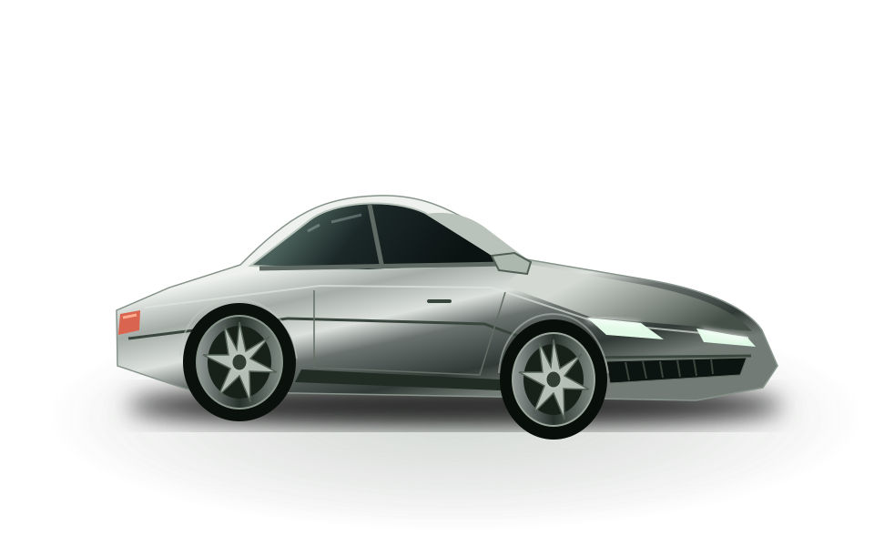

월급에서, 내 삶을 먼저.
생활비·대출 상환·저축을 제외한 여유 자금과 소득 대비 차량 지출 기준을 함께 봐요.
연봉 하나로 결정하기엔, 당신의 삶은 더 복잡하니까.
자산부터 월 지출까지. 타고 싶은 차와 편하게 탈 수 있는 차 사이의 답.

숫자는 솔직하게.
선택은 당신답게.
현재는 예시 값이 들어 있어요. 내 숫자로 바꾸면 나만의 결과가 됩니다.
막연한 ‘연봉의 몇 배’ 대신
실제로 감당할 수 있는 일상을 계산해요.
생활비·대출 상환·저축을 제외한 여유 자금과 소득 대비 차량 지출 기준을 함께 봐요.
비상금과 지켜야 할 목표자금은 남겨둬요. 부모님 자산 대신 확정된 지원금만 더해요.
보험·연료·주차·정비·세금에 감가상각과 이자를 더해 보유기간의 실제 비용을 살펴봐요.
월 차량 예산 = 소득 × 설정 비율과 (소득 − 생활비 − 주거비 − 부채 상환 − 가족 지출 − 목표 저축) × 70% 중 작은 금액. 빠듯한 상한선은 여유 자금 100%와 소득 비율 +10%p(최대 50%) 중 작은 금액입니다. 이 비율은 서비스의 계획용 가정이며 공식 금융 기준이 아닙니다.
초기자금 = 비상금과 목표자금을 제외한 가용자산 × 차량 투입 비율 + 확정 지원금 + 기존 차 순매각액. 부동산과 부모님 총자산은 구매 예산에 더하지 않습니다. 부채 잔액은 순자산에, 실제 상환액은 월 지출에 반영합니다.
차량 가격 = (초기자금 + 감당 가능한 월 할부금의 현재가치 − 등록 부대비용) ÷ (1 + 입력 취득비용률). 원리금균등상환을 가정합니다. 유지비조차 감당하기 어려우면 권장 예산은 0원으로 표시합니다.
보유기간 비용 = 차량 가격 − 예상 중고 매각가 + 취득·등록비 + 보유기간 발생 이자 + 유지비. 원금 상환과 감가상각을 중복 계산하지 않습니다. 매각 시 남은 대출은 별도로 표시합니다.
세금·보험료·가격·연비·잔존가치 기본값은 계산 예시입니다. 실제 견적, 세제 감면, 보험 경력, 운전 환경을 반영해 수정하세요. 연봉 추정 모드는 입력한 수령 비율을 단순 적용하며 세금 계산기가 아닙니다. 금융·세무 상담이나 대출 승인을 대신하지 않습니다.
총비용 구성 참고: CFPB 자동차 예산 안내 ↗